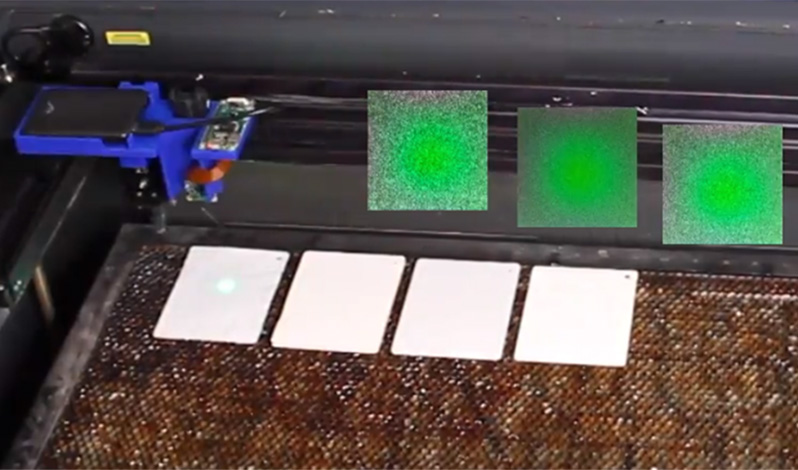
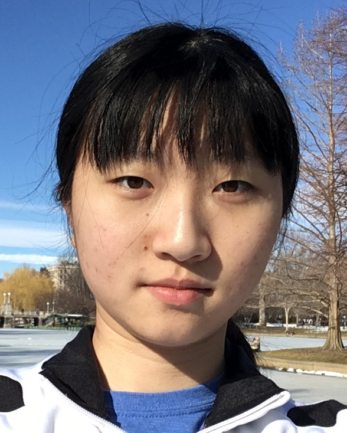
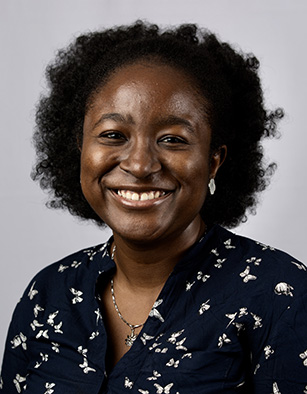

UROP / MEng with us
Before applying please read the information below carefully.
What do we look for in a UROP / MEng?
- When getting started in our lab, UROPs / MEng students typically start out by supporting one of our PhD students or postdocs on their research project.
- These research projects will be submitted for publication at the top HCI conferences ACM CHI and ACM UIST with the UROP / MEng-es co-authoring the papers and in some cases also traveling to the conference to give part of the talk or a live demo.
- We only look for UROPs/MEng-es seriously interested in becoming part of our research group. Each research project is important for the career of one of our PhD students or postdocs--we rely on each UROP and MEng to be a reliable team member and committed to making the project a success.
- In turn, you will be a member of a family-style research team with great mentoring, learn many new skills, and have a professional looking project on your portfolio.
- While we love to hear your own project ideas, the standard path in our lab is to first join an on-going research project with a senior mentor (PhD student or postdoc). Identifying a novel research contribution often takes years of training and is even a hard task for a mid-level PhD student.
UROP: Time Commitment + Pay/Credits
- UROPs will work ca. 8-10 hours per week. We care about outcomes and do not track your hours. However, we expect everyone to be present in the lab for most of this time to keep the communication paths short.
- You can do your UROP for pay or for credit.
- Please reach out before the following deadlines: spring semester: February 1, summer semester: April 1, fall semester: September 1, IAP: December 1).
- What if I don't have the skills yet? We do not expect you to already know everything--if you love the project and you are willing to put in the energy and time, we will be happy to teach you the necessary skills.
MEng: Time Commitment + Pay
- MEng-es are expected to spend at least 20 hours per week on their project. We care about outcomes and do not track your hours. However, we expect everyone to be present in the lab for most of this time to keep the communication paths short.
- You can do 2-, 3-, or 4-semester MEng-Thesis projects.
- Before applying to the lab, you need to have secured a TA position since we don't have funding to support MEng students (please mention the TA position in your email).
Application Process
If you are interested in working with us, send Prof. Mueller an email with the following:
- what position you are interested in (UROP/MEng)
- when you would like to start
- your CV
- a website showing your previous projects or a project portfolio as pdf
- your latest grade transcript
- two names of people who we can ask for a short recommendation (e.g., previous UROP or internship mentors)
Previous Projects
Below you find a summary of projects that resulted in published research papers with UROPs and MEng-es co-authoring the papers.

Mixels (ACM UIST 2022 Paper)
This project was led by HCIE PhD candidate Martin Nisser.
Yashaswini Makaram (UROP): Yashaswini worked on programming a magnetic plotter to rapidly print North- and South-aligned magnetic poles onto ferromagnetic sheet. This involved synthesizing magnetic signatures as binary-valued 2D matrices, and writing a script that translated these matrices into gcode for plotting using the magnetic plotter. She worked with team members to develop several iterations of prototypes to this end, ultimately building a device that could program custom magnetic signatures efficiently and accurately.
Tools/Programming Languages used: Python, Electronics, Rapid Prototyping.
Tools/Programming Languages used: Python, Electronics, Rapid Prototyping.

Lucian Covarrubias (UROP): Lucian worked on building a magnetic plotter capable of rapidly printing magnetic signatures onto ferromagnetic sheet. This plotter took the form of a modular hardware add-on that could be affixed onto a 3-axis CNC to be operated; in his case, a 3D printer. He prototyped several iterations of prototypes to this end, ultimately building a device that could program custom magnetic signatures efficiently and accurately.
Tools/Programming Languages used: CAD, Solidworks, Rapid Prototyping.
Tools/Programming Languages used: CAD, Solidworks, Rapid Prototyping.

Amadou Bah (MEng): Amadou developed a custom electromagnetic end-effector that could be used to program ferromagnetic sheet. He measured and characterized the magnetic properties of a variety of materials in terms of coercivity, remanence and saturation, and showed how to design both the programming and programmed materials for optimal effect. Finally, he built a custom-shaped electromagnetic tip and showed how this could program ferromagnetic material with locally strong, high-resolution magnetic pixels.
Tools/Programming Languages used: CAD, Solidworks, Rapid Prototyping.
Tools/Programming Languages used: CAD, Solidworks, Rapid Prototyping.

SensorViz (ACM DIS 2022 Paper)
This project was led by HCIE Postdoc Yoonji Kim.
Mihir Trivedi (MEng): I worked with the SensorViz team to develop the AR (augmented reality) components of SensorViz, as well as specific visualizations of individual sensors in 3D space. Using Rhino, Python, and experience with iOS app development, we utilized libraries and wrote software to visualize the sensors represented in our paper in an augmented reality environment. This allows the end user to get a feel for the size, shape, and placement of multiple sensors in a real environment without needing to purchase an array of similar devices.
Tools/Programming Languages used: Python, Rhino Grasshopper, Swift.
Tools/Programming Languages used: Python, Rhino Grasshopper, Swift.

KineCAM (ACM SIGGRAPH 2022 Art Paper)
This project was led by HCIE PhD student Ticha Sethapakdi.
Miranda Cai (UROP): I designed the circuitry and hardware pipeline for this project. I also developed the software behind the hardware components and helped with integrating our image processing techniques onto the system.
Tools/Programming Languages used: Python, Raspberry Pi.
Tools/Programming Languages used: Python, Raspberry Pi.

This project was led by HCIE PhD student Martin Nisser.

Yashaswini Makaram (UROP):
I worked to develop modular robots that maneuvered using electromagnets. I have also been working on a project to stochastically assemble configurations using programmable magnets. Both of these projects require a lot of interdisciplinary work. I needed to pull together knowledge from physics, mathematics, and electrical engineering in order to find solutions. Along the way I had to discover not only the solutions to unanswered questions, but also had to contend with questions that had not been asked in the first place. From this Research opportunity, I realised how deep and broad research can be and how to contend with unexpected results.
Tools/Programming Languages used: Python, Electronics, Rapid Prototyping
Tools/Programming Languages used: Python, Electronics, Rapid Prototyping
Leon Cheng (MEng):
I designed and developed a 3D interactive simulation for the project's focus on magnetic cube block assembly. Reconfigurations of multiple Electrovoxel cubes are difficult to coordinate because every cube's set of magnets is reoriented with a rotation in space and adjacent magnets must be carefully coordinated to produce the correct strength and duration of magnetic attraction or repulsion. Therefore, building a Javascript to Arduino program that can simulate the physics and follow UX heuristics was able to vitally simplify the level of thinking required for large reconfigurations. I also supported the mechanical assembly of physical cubes using custom wrapped electromagnets for the specially designed physical cube.
Tools/Programming Languages used: React, ThreeJS, TypeScript, Arduino.
Tools/Programming Languages used: React, ThreeJS, TypeScript, Arduino.

This project was led by HCIE PhD student Doga Dogan.

Ahmad Taka (UROP):
I developed a 3D editor that can take STL files and embed Unique Identifying tags. I also implemented the image processing pipeline for processing the IR codes. I also built various models and tools for InfraredTags applications, including a USB camera module for detection and decoding.
Tools/Programming Languages used: Python, OpenCV, Rhino/Grasshopper, Javascript
Tools/Programming Languages used: Python, OpenCV, Rhino/Grasshopper, Javascript
EIT-kit (ACM UIST 2021 Paper)
This project was led by HCIE PhD student Junyi Zhu.
Jackson Snowden (UROP): I developed the EIT-kit sensing board that supports different EIT measurement setups (2- and 4-terminal, up to 64 electrodes, and single or multiple electrode arrays), and that provides adjustable AC injecting current to improve the quality of the signal.
I also performed evaluations on the electrode contact and measuring data collection.
Tools/Programming languages: EAGLE, Arduino, C, Matlab.
Tools/Programming languages: EAGLE, Arduino, C, Matlab.

Joshua Verdejo (MEng): I developed an image reconstruction library for mobile devices for interpolating and visualizing the measured data. The library takes EIT measuring data via Bluetooth, and can visualize the reconstructed image in 2D and 3D, as well as AR environment. The library is implemented in Xcode and designed for iOS devices (e.g. iPhone, iPad).
Tools/Programming languages: Xcode, Swift, Python.
Tools/Programming languages: Xcode, Swift, Python.

Emily Chen (UROP): I developed a microcontroller library for EIT sensing board that automates the calibration of the signals and facilitates data collection. The library collects the EIT measuring data and send them either via Serial Port or Bluetooth (to mobile image reconstruction library). The library supports both ESP32 and Teensy as the microcontroller.
Tools/Programming languages: Arduino, C, Matlab.
Tools/Programming languages: Arduino, C, Matlab.

SensiCut (ACM UIST 2021 Paper)
This project was led by HCIE PhD Student M. Doga Dogan.
Steven Acevedo (UROP): Steven worked on multiple aspects of the project: First, he developed and tested machine learning models (involving convolutional neural networks) to predict laser cutting sheets' material type from a single
speckle pattern. Second, he helped develop a Web-based user interface (HTML, JS, and CSS) for creating a novel, material-aware laser cutting workflow. Third, he developed 3D models for mounting speckle imaging hardware onto laser cutters using CAD software. He is a co-author on the UIST'21 paper "SensiCut: Material-Aware Laser Cutting Using Speckle Sensing".

MetaSense (ACM UIST 2021 Paper)
This project was led by HCIE Visiting PhD Student Jun Gong.
Olivia Seow (SM): MetaSense integrates sensing into 3D printable metamaterial structures by fabricating specific cell walls from conductive filament, thereby creating capacitive sensors. Olivia worked on and improved the web-based editor to create these structures. She developed the algorithm for analyzing deformations in the cell structures, in order to identify most optimal locations for placing conductive cell walls during the design phase. She prototyped the algorithm in a standalone three.js environment, and integrated it on the editor with Karamba, a finite element solver in Grasshopper. Using this editor, she designed and 3D printed mechanisms to showcase Metasense and its integrated sensing capabilities, experimenting with and identifying 3D printer specifications for fabricating robust structures. She helped to visualize the capacitances of the cell structures to characterize their performance. She was involved with the whole research process, creating figures, videos, and writing for the publication as co-first author.

Lenticular Object (ACM UIST 2021 Paper)
This project was led by HCIE PhD student Yunyi Zhu.
Yunyi Zhu (MEng): I developed the Lenticular Object interactive editor that allows the user to upload an arbitrary 3D model and
specify the appearances to show at each viewpoint.
I implemented the algorithm that generates the corresponding Lenticular Object according to the user input.
I also performed evaluations on the performance of the fabrication method and fabricated four application scenarios.
Tools/Programming languages: Rhino 3D, Grasshopper, Python, C#.
MIT EECS Licklider UROP Award 2019
MIT EECS Licklider UROP Award 2019

This project was led by HCIE PhD student Martin Nisser.

Christina Liao (MEng): Christina developed the software pipeline for a novel fabrication method that uses a laser cutter to automatically create fully-functional devices that work immediately after fabrication is complete. The software pipeline she designed consists of a design interface, in which users can define the circuitry and geometry of the device to fabricate, and a post-processing system that transforms the design into machine instructions that a laser cutter uses to fabricate the device. With this pipeline, users can design and fabricate high-fidelity devices without needing to know the specifics behind the fabrication process.
Tools/Programming languages: Javascript, Python, Blender, Adobe Illustrator.
Tools/Programming languages: Javascript, Python, Blender, Adobe Illustrator.
2021 Charles & Jennifer Johnson Best Computer Science MEng Thesis Award
Aradhana Adhikari (MEng): Ara developed a 3D visualization tool in Blender for LaserFactory's fabrication system. The 3D visualization tool is a two part system. One part generates 3D models of the fabrication output from 2D SVG design files. In addition to the 3D model, the tool also creates an animated visualization of all the fabrication steps involved in creating the design, which includes all steps for creating the geometry of the design as well as the steps for building th electronic circuit. These 3D models and animations are created using Blender’s Python API, and the results are displayed in a Blender window. This tool is used to visualize designs with many different features, including LED and quadrotor control circuits, structures with holes, and also 3D structures created through folding.
Tools/Programming languages: Python, Blender.
Tools/Programming languages: Python, Blender.

This project was led by HCIE PhD student Ticha Sethapakdi.

Adrian Sy (MEng): I implemented a fast 2D packing algorithm that packs parts of a laser-cut design onto material sheets that may have previously cut holes. The algorithm produces comparable-quality solutions 4 times faster than Deepnest, a state-of-the-art open-source nesting tool. I also built the Docker image to make Fabricaide easier to install onto participants' machines for the remote user study.
Tools/Programming languages: C++, Python, Docker.
Tools/Programming languages: C++, Python, Docker.

This project was led by HCIE Postdoc Michael Wessely.

Cattalyya Nuengsigkapian (MEng): I developed a multithreaded optimization algorithm for reprogramming multi-color textures, which reduces the reprogramming time by half compared to previous work (PhotoChromeleon). I implemented multi-round optimization for better color quality and supported digital previews of the resulting pattern on a Blender 3D model.
I implemented a light controller and camera capture in Python to automatically collect and generate an activation and deactivation graph of dye color changes over time in MATLAB.
Programming languages: Processing(Java), Python, MATLAB.
Programming languages: Processing(Java), Python, MATLAB.

This project was led by HCIE PhD student Dishita Turakhia.

Harrison Allen (UROP): Harrison devdeloped the user interface for the FabO toolkit. He was part of the team from the early conception of the project and worked on several stages of the research project from brainstorming system designs, to developing prototypes in AR, VR, and desktop games. He also worked on fabricating some of the physical protoypes of the objects from the games. For the final version of the system, Harrison developed the interface in PyQt and used OpenCv library for the computer vision based features. Tools/Programming Languages: Rhino3D, Unity, Microsoft Hololens, Python, laser cutter.
This project was led by HCIE PhD student Dishita Turakhia.


Yini Qi (MEng): Yini joined the project from its conception and assited in brainstorming the system design, application examples, and prototype design. She also built two prototypes of the adaptive tools - an adaptive bike and adaptive pen grips. The fabrication of the adaptive bike involved installing sensors, actuators, and additional electronics on the bike. Prototyping the pen grips involved implemntation of computer vision techniques for handwriting recognition. Finally, Yini also assisted in conducting user studies to evaluate the system design. Tools/Programming Languages: Protoyping with electronics, Python, Arduino, lasercutting, 3D printing.
Andrew Wong (UROP): Andrew developed the web-based user interface for the Adapt2Learn toolkit. Besides working on the design of the interface, he also added several additional features, such as modifying sensor settings, actuator settings and mapping those settings to autogenerate a learning algorithm as an output.This involved using index.html, main.css, and ui.js to design the web based interface that automatically generates the microcontroller script. Tools/Programming Languages: HTML, CSS, Javascript, Python, Arduino.
Lotta Gili-Blumberg (UROP): Lotta designed and fabricated the adaptive basketball stand ptotype which was mounted with several sensors and actuator motors. She also assisted in conducting the user studies. Tools/Programming Languages used: Rhino 3D, protoyping with electronics, fabrication in metal and wood workshop using advanced tools, Python, Arduino, lasercutting, 3D printing

This project was led by HCIE PhD student Junyi Zhu.

Yunyi Zhu (SuperUROP): I developed the MorphSensor 3D editor that can load existing sensor modules, rearrange their components on the 3D prototype object, and export the design for fabrication. I also built various initial breadboard circuits for MorphSensor applications, including N95 mask, blue light monitoring glasses etc. Tools/Programming Languages used: Rhino 3D, Python, Arduino, C.
MIT EECS Best SuperUROP Award 2019
MIT EECS Best SuperUROP Award 2019
Jiaming Cui (UROP): I developed the sensor module database for the MorphSensor system. I also built initial versions of MorphSensor via kapton tapes, laser cutter and copper wire sewing. I designed the final MorphSensor footprints (the Bigfoot) in EAGLE, and implemented the Bigfoot auto-generation on unrecorded SMD footprints via EAGLE ULP. Tools/Programming Languages used: Rhino 3D, Python, EAGLE ULP, laser cutter.
Leon Cheng (UROP): I developed an algorithm embedded within MorphSensor system that automatically places electronic components from EAGLE sensor module file in a valid layout onto a custom-formed board. I worked on generating initial fabrication guide files for exported sensor modules from MorphSensor system. I also worked on extracting logic wire connections from EAGLE files as json files for MorphSensor system. Tools/Programming Languages used: Rhino 3D, Python, EAGLE
Jackson Snowden (UROP): I designed the initial footprints (BigFoot) used in the project and later verified these designs after receiving the fabricated boards. Tools/Programming Languages used: KiCAD, EAGLE.
This project was led by HCIE Postdoc Michael Wessely.

Carlos Castillo (UROP): This project included an end-to-end fabrication pipeline from a digital design tool to the fabrication of large UIs using airbrush spraying. I implemented the digital design toolkit in the 3D editor Blender. I implemented a set of tools for touch sensors, sliders, proximity sensors and electroluminescent displays that lets users draw them on a 3D object. The full design can be exported as 2d stencils and as 3D projections. Tools/Programming Languages used: Python(Blender), Processing(Java). MIT EECS Licklider Best UROP Award 2020
Jackson Snowden (UROP): I created a capacitive touch sensing driver on an Arduino platform for sensing interactions with sprayed-on contacts. Then, touch inputs were used to drive Philips Hue lights using a custom Python script and to play audio using an Arduino-SD card interface.
I also created a touch display driver by utilizing a switching circuit to deliver power to an electroluminescent display while receiving touch input from the same display. This required me to design and fabricate a custom circuit as well as write extensive Arduino software to drive the circuit. Later, I adapted the existing touch sensing driver to do proximity sensing. This involved several filtering techniques to attain maximum sensitivity while rejecting 60 Hz noise from the surroundings. This new software was used to detect swipe gestures and control a photo album. Tools/Programming Languages used: This project primarily required me to use low-level C to get high performance from the Arduino. I was also able to prototype some simple circuits, create a multi-layer PCB design, and fabricate the final PCB by hand.

This project was led by HCIE PhD student Junyi Zhu.


Lotta Blumberg (MEng): Explored various fabrication methods for CurveBoards and finalized the 3D printing + conductive silicone mixing & injection fabrication pipeline. Fabricated various CurveBoard models, including bracelet, helmet, headphones, frisbee etc. Evaluated the conductivity & durability of the conductive silicone, and evaluated the fabricated CurveBoards via a user study. Tools/Programming Languages used: 3D printer, conductive inkjet printing, conductive silicone, Arduino, C.
Yunyi Zhu (SuperUROP): I developed the CurveBoard interactive 3D editor that converts an arbitrary geometry into a CurveBoard model. This includes the algorithm of auto-generating bus channels, the UI for adding and deleting channels, as well as performance engineering for converting the channel information into the final CurveBoard 3D model. I also designed various CurveBoard models, including navigation helmet, interactive headphones, frisbee. Tools/Programming Languages used: Rhino3D.
MIT EECS Best SuperUROP Award 2019
MIT EECS Best SuperUROP Award 2019
Xin Wen (UROP): Xin helped out the last couple of weeks building examples. Xin built an interactive CurveBoard navigation helmet for cyclists. The helmet indicates the routing direction via vibration buzzers on right and left sides, and has turning and stop signal led matrices. Tools/Programming Languages used: Rhino 3D, 3D printer, Arduino, C.
Kevin Shum (UROP): Kevin also hopped onto the project to help with last minute example building. Kevin built a pair of interactive CurveBoard headphones that is capable of receiving radio and music playing, with sound frequency visualization on a led matrix. Tools/Programming Languages used: Rhino 3D, 3D printer, Arduino, C.

Jessica Quaye (UROP): Finally, Jessica helped with example by building the circuit on CurveBoard trinity bracelet and Utah Teapot models shortly before the deadline. Tools/Programming Languages used: Rhino 3D, 3D printer, Arduino, C.

This project was led by HCIE PhD student Doga Dogan.

Andrew Churchill (UROP):
I started by researching, designing, and iterating on a computer vision algorithm to detect the shape of a 3D printed object’s internal structure. This meant several tries at finding the right algorithm, as well as lots of learning about how to clean up noisy images to get something the algorithm could even work on in the first place. Then, once I had a working Python prototype for the algorithm, I rewrote it in C++, and wrote an Android app which used that C++ code on images from the phone’s camera to detect the internal structure. I also incorporated another computer vision algorithm written by Doga, which was based on 2D Fourier transforms.
Tools/Programming Languages used: Python, OpenCV, C++, Android, Java
Tools/Programming Languages used: Python, OpenCV, C++, Android, Java
Leon Cheng (UROP):
I developed a coffee machine prototype with custom electronics to illustrate the capabilities of individually identifiable 3D printed mugs. I built this by disassembling a standard coffee machine and then modifying and reconstructing it, using 3D modeling and printing to build a mug stand and a LCD screen to form an interactive electronic coffee dispenser.
Tools/Programming Languages used: Languages used: Arduino, Rhino, Grasshopper.
Tools/Programming Languages used: Languages used: Arduino, Rhino, Grasshopper.

This project was led by HCIE Postdocs Yuhua Jin, Isabel Qamar, and Michael Wessely.
Aradhana Adhikari (UROP):
I developed an automated evaluation system for the Photo-Chromeleon project. I wrote a program that controlled light sources, a camera system and an openCV image processing system that captured the behavior of photochromic coatings under varying illuminations with visible and ultraviolet light. The system also generated a plot of the captured data using a Matlab library.
Tools/Programming Languages used: Python, OpenCV, Java
Morais & Rosenblum Best UROP Award
Tools/Programming Languages used: Python, OpenCV, Java
Morais & Rosenblum Best UROP Award
Previous UROPs/MEng-es
Xin Wen (6-3, UROP/SuperUROP/UTA)

- implemented 3D modeling plugin for research project ColorMod + co-authored ACM CHI 2018 paper
- presented ColorMod at ACM CHI conference in Montreal as talk and live demo (3000 attendees)
- ColorMod mentioning Xin covered by BBC, CNN, and was a main spotlight on MIT website
- MIT EECS Best UROP Award for her work on ColorMod
- path in the lab: UROP summer 2017, SuperUROP fall 2017/spring 2018, UTA for Prof. Mueller's class 6.810 Engineering Interactive Technologies in fall 2018


Lotta Blumberg (6-1, UROP/MEng/TA)
- build adaptive hardware prototype using 3D printing & electronics + co-authored Adaptive Learning paper (under submission)
- currently working on two projects with PhD student Junyi Zhu: silicone casting 3D breadboards and corresponding 3D modeling tool + making minutiarized custom PCB boards (to be submitted as two papers to ACM UIST 2019)
- path in the lab: student in Prof. Mueller's class 6.810 Engineering Interactive Technologies in fall 2017), UROP IAP/spring 2018, MEng starting summer 2018, TA for 6.810 in fall 2018